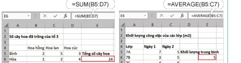
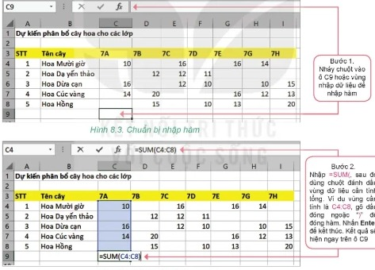
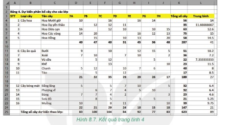

Dành cho giáo viên
Theo dõi lớp
| Học sinh / Nhóm | Đã nộp | Cập nhật |
|---|
Bước 1
1 Khởi động
Khám phá Hình ảnh khởi động
Khởi động Hàm hỗ trợ tính toán
Trong bài trước em đã biết cách tính toán theo công thức trên trang tính. Phần mềm bảng tính còn có các hàm giúp em tính toán. Trong phần mềm bảng tính, hàm là công thức (hoặc kết hợp nhiều công thức) được định nghĩa từ trước. Hàm được sử dụng để thực hiện tính toán theo công thức với các giá trị dữ liệu cụ thể. Phần mềm bảng tính có rất nhiều hàm có sẵn hỗ trợ tính toán, ví dụ hàm tính tổng, hàm đếm, hàm tính giá trị trung bình,… Trong dự án Trường học xanh có cần dùng các hàm này để tính toán không, chúng ta hãy cùng tìm hiểu nhé.
Ghi bài Khởi động
Sau khi thầy cô chốt, em chép nội dung dưới đây vào vở.
Bước 2 · Hình thành kiến thức mới
2.1 Hàm trong bảng tính
Hoạt động 1 Hàm trong bảng tính
Em hãy quan sát công thức là hàm trong Hình 8.1 và Hình 8.2 (chú ý quan sát kĩ công thức trong vùng nhập dữ liệu) và trả lời các câu hỏi sau: 1. Tên của hàm là gì? 2. Ý nghĩa của hàm là gì? 3. Hàm có bao nhiêu tham số, các tham số của hàm là gì?

Mỗi hàm trong bảng tính sẽ được xác định bởi:
- Tên của hàm (ví dụ SUM).
- Ý nghĩa hàm (ví dụ tính tổng).
- Các tham số của hàm có thể là dãy bao gồm các số, địa chỉ ô, địa chỉ vùng dữ liệu được viết cách nhau bởi dấu “,” hoặc dấu “;”.
Hoạt động 2 Nhập hàm
Theo em, nhập hàm vào bảng tính có giống như nhập dữ liệu thông thường không?
Quan sát bảng dữ liệu phân bổ các cây hoa cho khối lớp 7 như trong Hình 8.3. Chúng ta sẽ nhập hàm tại các ô từ C9 đến I9 để tính tổng các cây được phân bổ cho mỗi lớp.
Quan sát bảng dữ liệu phân bổ các cây hoa cho khối lớp 7 như trong Hình 8.3. Chúng ta sẽ nhập hàm tại các ô từ C9 đến I9 để tính tổng các cây được phân bổ cho mỗi lớp.
- Bước 1. Nháy chuột vào ô C9 hoặc vùng nhập dữ liệu để nhập hàm.
- Bước 2. Nhập =SUM(, sau đó dùng chuột đánh dấu vùng dữ liệu cần tính tổng (vùng C4:C8), gõ dấu đóng ngoặc “)” để đóng hàm. Nhấn Enter để kết thúc. Kết quả sẽ hiện ngay trên ô C9.

Làm trên bảng mô phỏng: nháy C9, gõ =SUM(, rồi kéo chuột chọn C4:C8 trên bảng (địa chỉ vùng tự hiện trong công thức), gõ “)” và nhấn Enter. Sau đó sao chép C9 sang D9:I9.
Câu hỏi SGK trang 41
Ghi bài 1. Hàm trong bảng tính
Sau khi thầy cô chốt, em chép nội dung dưới đây vào vở.
Bước 2 · Hình thành kiến thức mới
2.2 Một số hàm tính toán đơn giản
Hoạt động 3 Làm quen với một số hàm tính toán đơn giản
Em hãy xem lại dữ liệu của dự án Trường học xanh và cho biết em cần tính toán những gì? Các yêu cầu tính toán đó có thể diễn tả bằng các hàm như thế nào?
Sử dụng các hàm SUM (tính tổng), AVERAGE (tính trung bình cộng), MIN (tìm giá trị nhỏ nhất), MAX (tìm giá trị lớn nhất), COUNT (đếm) để thực hiện các yêu cầu. Lưu ý, tất cả các hàm này đều có cú pháp sử dụng tương tự như hàm SUM đã biết. Quan sát trang tính Dự kiến phân bổ cây hoa cho các lớp, tính toán để trả lời các câu hỏi tại cột J bằng cách nhập công thức tại các ô từ K4 đến K8 tương ứng (Bảng 8.1).
Sử dụng các hàm SUM (tính tổng), AVERAGE (tính trung bình cộng), MIN (tìm giá trị nhỏ nhất), MAX (tìm giá trị lớn nhất), COUNT (đếm) để thực hiện các yêu cầu. Lưu ý, tất cả các hàm này đều có cú pháp sử dụng tương tự như hàm SUM đã biết. Quan sát trang tính Dự kiến phân bổ cây hoa cho các lớp, tính toán để trả lời các câu hỏi tại cột J bằng cách nhập công thức tại các ô từ K4 đến K8 tương ứng (Bảng 8.1).
| Yêu cầu tính toán | Công thức tính | Kết quả |
|---|---|---|
| Trung bình mỗi lớp sẽ trồng bao nhiêu cây? | =AVERAGE(C4:I8) | 13.6667 |
| Số cây hoa Dừa cạn lớn nhất một lớp sẽ trồng là bao nhiêu? | =MAX(C6:I6) | |
| Số cây hoa Mười giờ ít nhất một lớp sẽ trồng là bao nhiêu? | =MIN(C4:I4) | |
| Bao nhiêu lớp sẽ trồng hoa Hồng? | =COUNT(C8:I8) | |
| Lớp 7B sẽ trồng bao nhiêu loại hoa? | =COUNT(D4:D8) |
Đọc hiểu Cú pháp một số hàm (Bảng 8.2)
| Tên hàm | Cách viết | Ý nghĩa | Ví dụ |
|---|---|---|---|
| SUM | SUM(v1,v2,...) | Tính tổng các giá trị số có trong các ô, vùng hoặc số có trong danh sách v1, v2,… | SUM(C3:E5) SUM(D4:H4,15,K10) |
| AVERAGE | AVERAGE(v1,v2,...) | Tính trung bình cộng các giá trị số có trong các ô, vùng hoặc số có trong danh sách v1, v2,… | AVERAGE(B2:E6) AVERAGE(10,12,1) |
| MIN | MIN(v1,v2,...) | Tìm giá trị nhỏ nhất trong các giá trị số có trong các ô, vùng hoặc số có trong danh sách v1, v2,… | MIN(A1:B10) MIN(C2,B3,10) |
| MAX | MAX(v1,v2,...) | Tìm giá trị lớn nhất trong các giá trị số có trong các ô, vùng hoặc số có trong danh sách v1, v2,… | MAX(B1:E1) MAX(2,A1:B5) |
| COUNT | COUNT(v1,v2,...) | Đếm số các giá trị là số có trong các ô, vùng hoặc số có trong danh sách v1, v2,… | COUNT(B3:E10) COUNT(1,2) |
Lưu ý:
- Tất cả các hàm trên đều chỉ xử lí các ô có dữ liệu số có trong tham số của hàm. Hàm sẽ bỏ qua các ô dữ liệu chứa văn bản hoặc ô trống.
- Các phần mềm bảng tính thường dùng dấu chấm “.” để ngăn cách phần nguyên và phần thập phân, dùng dấu phẩy “,” để ngăn cách các chữ số hàng nghìn, hàng triệu,…
Ghi bài 2. Một số hàm đơn giản
Sau khi thầy cô chốt, em chép nội dung dưới đây vào vở.
Bước 2 · Thực hành
2.3 Thực hành: Tính toán trên dữ liệu trồng cây thực tế
Nhiệm vụ Trang tính 4. Dự kiến kết quả
Nhiệm vụ: tạo trang tính mới để nhập dữ liệu dự kiến kết quả thực hiện dự án; nhập và sao chép dữ liệu; thiết lập công thức tính tổng số cây mỗi loại và tổng số cây các loại mà mỗi lớp trồng được; định dạng dữ liệu.
Hướng dẫn:
Hướng dẫn:
- a) Tạo trang tính mới: mở tệp THXanh.xlsx, tạo thêm một trang tính mới đặt tên 4. Dự kiến kết quả.
- b) Nhập và sao chép dữ liệu: nhập tại ô A2: Bảng 4. Dự kiến phân bổ cây cho các lớp; sao chép vùng A3:C19 của trang tính 3. Tìm hiểu giống cây sang trang tính mới tại A3; nhập dữ liệu phân bổ cho các lớp như Hình 8.6 (bảng mô phỏng đã nhập sẵn).
- c) Tính tổng số cây mỗi loại mà mỗi lớp trồng được: chèn thêm hai hàng trống ở trên hàng 9 (chọn cả hàng 9, nháy nút phải chuột tại hàng 9 và chọn lệnh Insert, làm hai lần); tương tự chèn hai hàng trống ở trên hàng có số thứ tự 12. Tại ô D9 nhập =SUM(D4:D8) rồi sao chép sang các ô bên cạnh ứng với các lớp 7B, 7C, 7D, 7E, 7G, 7H. Thực hiện tương tự để tính tổng số cây ăn quả và cây bóng mát mà mỗi lớp đã trồng.
- d) Tính tổng số cây các loại mà mỗi lớp trồng được: tại ô D25 nhập =D9+D17+D24, sao chép sang E25:J25. Tại hàng 3, bên cạnh cột 7H tạo thêm hai cột Tổng số cây và Trung bình. Tại ô K4 nhập =SUM(D4:J4); tại ô L4 nhập =AVERAGE(D4:J4). Sao chép K4 xuống đến K25, L4 xuống đến L25, sau đó xoá dữ liệu tại các hàng trống (K10, K18, L10, L18).
- e) Định dạng: chữ in đậm cho tiêu đề bảng; hàng tiêu đề (hàng 3) chữ in đậm và nền màu vàng; chữ in đậm cho tất cả các ô chứa dữ liệu tổng hợp. Lưu lại kết quả.

Ghi bài 3. Thực hành
Sau khi thầy cô chốt, em chép nội dung dưới đây vào vở.
Bước 3
3 Luyện tập
Luyện tập Câu hỏi SGK trang 44
Có thể làm câu 1 và câu 3 ngay trên bảng mô phỏng ở phần Thực hành.
Ghi bài Luyện tập
Sau khi thầy cô chốt, em chép nội dung dưới đây vào vở.
Bước 4
4 Vận dụng
Vận dụng Chi tiêu của gia đình
Em hãy tạo bảng tính và nhập dữ liệu ghi lại các khoản chi tiêu của gia đình em trong một tháng (có thể thử trước trên bảng mô phỏng dưới đây). Sử dụng các hàm để tính toán và trả lời các câu hỏi. Em hãy chia sẻ với bố mẹ những kết quả em tính toán được để cùng cân đối chi tiêu gia đình sao cho hợp lí.
Ghi bài Vận dụng
Sau khi thầy cô chốt, em chép nội dung dưới đây vào vở.